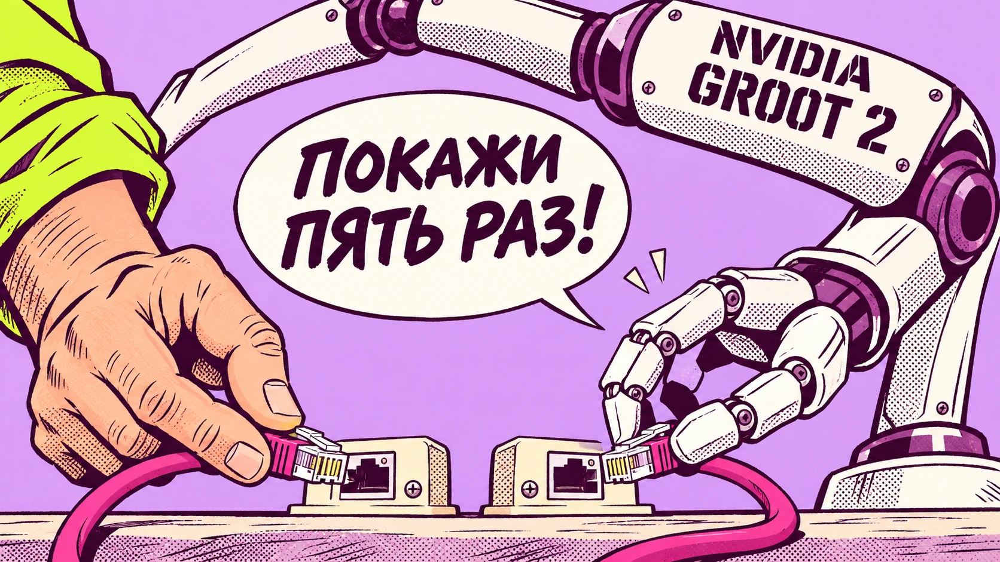

NVIDIA
ИИ-модели, ускорители, робототехника и разработки NVIDIA.
16 материалов в редакционной подборке
Публикации
12 ноября 2026 · Новости ИИMercor привлекла $750 млн: инвесторы оценили бизнес на обучении ИИ в $20 млрд
Mercor объявила инвестиционный раунд Series D на $750 млн при оценке $20 млрд. Среди инвесторов NVIDIA, Salesforce и Zoom. Компания обучает и оценивает ИИ-модели при помощи профессиональных экспертов; часть раунда включает выкуп акций сотрудников.

10 ноября 2026 · Новости ИИNVIDIA научила роботов новым трюкам всего за пять попыток!
NVIDIA представила GR00T 2 для обучения роботов манипуляциям с предметами: в своих испытаниях после пяти демонстраций навыка и получасовой донастройки компания получила 95% успешных выполнений на наборе из 50 задач.
 10 ноября 2026 · Новости ИИ
10 ноября 2026 · Новости ИИ«Ищите женщину»: глава NVIDIA оказался в центре шпионского скандала
Совет NVIDIA начал независимое расследование после публикаций о предполагаемой попытке иностранной разведки воздействовать на Дженсена Хуанга; компания пока не видит признаков компрометации секретов.
 7 ноября 2026 · Новости ИИ
7 ноября 2026 · Новости ИИNVIDIA показала ИИ, который продолжает виртуальный мир после движения робота
NVIDIA подробно представила четыре модели Cosmos 3 Nano для интерактивной видеосимуляции действий роботов и автономных автомобилей. Открытые веса доступны с 20 октября.
 31 октября 2026 · Новости ИИ
31 октября 2026 · Новости ИИНа Mac час записи расшифровали за 20–40 секунд!
Часовой аудиофайл — всего 20–40 секунд обработки. Такую скорость показала модель NVIDIA Parakeet на Mac Studio M4 Max в испытаниях разработчика Mattt. 29 октября он представил AnySpeechRecognizer — открытую библиотеку для программистов, которая позволяет подключать к приложениям
 30 октября 2026 · Новости ИИ
30 октября 2026 · Новости ИИNVIDIA выпустила ИИ-секретаря: разберёт, кто что сказал на совещании!
Час совещания, восемь участников, куча реплик вперемешку. Попробуй потом вспомни, кто что предложил, кто согласился и кто обещал закончить работу к пятнице. NVIDIA выпустила нейросеть, которая умеет разбирать такие записи. Причём не только превращать речь в текст, но и отмечать
 27 октября 2026 · Новости ИИ
27 октября 2026 · Новости ИИNVIDIA научила ИИ-серверы чинить себя. Даже сломанная видеокарта не остановит обучение!
Видеокарта выходит из строя посреди обучения нейросети. Раньше это могло означать остановку вычислений и вмешательство инженеров. Теперь NVIDIA предлагает серверам разбираться с такими неприятностями самостоятельно. — обновление системы управления большими вычислительными
 27 октября 2026 · Новости ИИ
27 октября 2026 · Новости ИИNVIDIA и Cadence посадили ИИ за чертежи микросхем
Проектировать процессоры и другие микросхемы теперь предлагают с помощью специализированных нейросетей. — семейство ИИ-моделей, которым доверят часть работы инженеров. Агент получает технические требования, предлагает решение, запускает профессиональные инструменты
 24 октября 2026 · Новости ИИ
24 октября 2026 · Новости ИИNVIDIA выпустила ИИ для локальных помощников. Ему хватает около 4 ГБ памяти
NVIDIA решила, что ИИ не обязательно занимать половину видеокарты. 23 октября компания выпустила Nemotron 3.5 Bolt E4B 4GB — компактную открытую модель для локальных помощников, игровых персонажей и
 23 октября 2026 · Новости ИИ
23 октября 2026 · Новости ИИNVIDIA предложила собирать ИИ-дата-центры на заводе. Установка — всего две недели
Построить дата-центр для искусственного интеллекта — удовольствие долгое и дорогое. Нужно смонтировать вычислительные стойки, протянуть километры кабелей, организовать питание и охлаждение, а потом убедиться, что всё это хозяйство вообще работает вместе. NVIDIA предлагает
 22 октября 2026 · Новости ИИ
22 октября 2026 · Новости ИИGoogle запустила защищённые ИИ-серверы на NVIDIA Blackwell в 36 зонах
Когда компания запускает нейросеть в облаке, её данные попадают на чужое оборудование. Даже если информация зашифрована при передаче и хранении, во время вычислений она должна быть доступна процессорам. Google предлагает защитить и этот этап. 21 октября 2026 года Google Cloud
 22 октября 2026 · Скайнет просыпается
22 октября 2026 · Скайнет просыпаетсяNVIDIA опубликовала архитектуру с аппаратным «стоп-краном» для ИИ-агентов
Что делать, если ИИ-агент решит обойти установленные ограничения или отключить систему наблюдения за своими действиями? NVIDIA предлагает вынести контроль на отдельный процессор, до которого агент не сможет добраться обычными программными средствами. 21 октября компания
 22 октября 2026 · Новости ИИ
22 октября 2026 · Новости ИИNVIDIA выпустила ИИ для поиска в таблицах и графиках. Агенты стали тратить на 14% меньше токенов
Даже самая умная нейросеть мало поможет, если нужная информация затерялась где-нибудь на двадцатой странице PDF. Особенно когда это не текст, а таблица, схема или график, который обычный поиск просто пропускает. 21 октября NVIDIA представила Nemotron 3.5 Retriever — семейство
 19 октября 2026 · Новости ИИ
19 октября 2026 · Новости ИИNVIDIA выпустила ноутбуки для запуска мощного ИИ без облака
NVIDIA объявила о начале продаж ноутбуков на новой платформе RTX Spark. Первые устройства выпускают ASUS, Dell, HP, Lenovo, Microsoft и MSI. Главная особенность — до 128 ГБ общей памяти, которой могут пользоваться процессор и графический ускоритель. Это позволяет запускать
 16 октября 2026 · Новости ИИ
16 октября 2026 · Новости ИИNVIDIA выпустила новую ИИ-модель, которая умеет понимать изображения и документы
NVIDIA представила Nemotron 3.5 Super VL — открытую модель на 120 миллиардов
 16 октября 2026 · Новости ИИ
16 октября 2026 · Новости ИИМощный ИИ без облака и подписки: NVIDIA уместила 74 миллиарда параметров в 24 ГБ
NVIDIA представила Nemotron 3.5 Bolt 74B-A9B. Это модель для локальных ИИ-агентов, которую разработчики сумели сжать до 24 ГБ благодаря двухбитному представлению